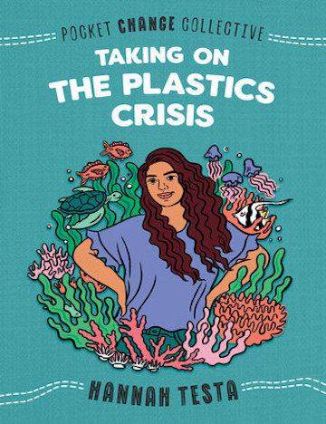
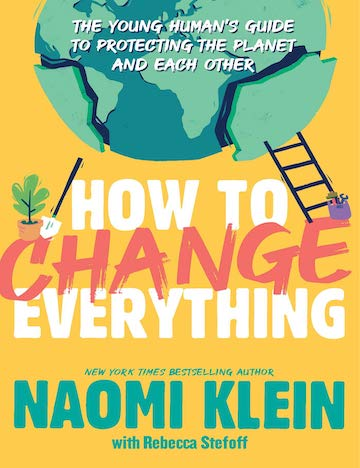

How I Resist: Activism and Hope for a New Generation edited by Maureen Johnson
review goes here">
Youth to Power: Your Voice and How to Use It by Jamie Margolin
review goes here">
Taking on the Plastics Crisis by Hannah Testa
review goes here">
How to Change Everything: A Young Human's Guide to Protecting the Planet and Each Other by Naomi Klein
review goes here">

about this shelf
an original virtual library shelf (website) with titles that link to book descriptions or online booktalks; a user should be able to navigate to your virtual library shelf/space, click on each title to see bibliographic info and some description of the contents, and at least 2 read-alikes for each text on your "shelf."
There should also be a brief reflection on your topic, target audience, environment (school? public?), process, and how you might use this in your future (or present) career